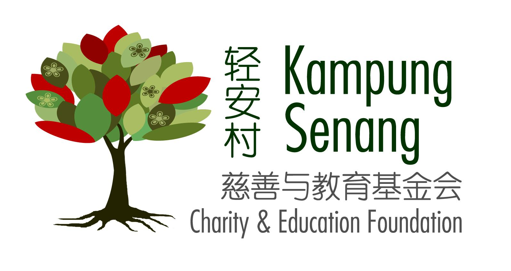
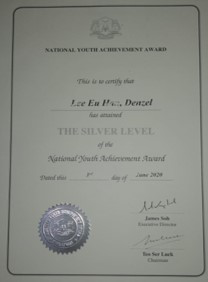
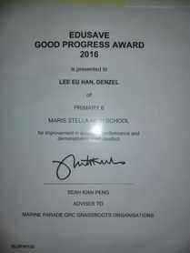
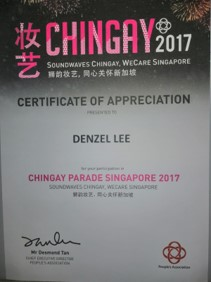

1 / 4

Chairty Work (Time span: 4 months): Within these two months, I went around doing door to door sales to collect money to help raise funds for elderlies in need of care and support. Using the money we raised, we helped to ensure that the elderlies would have more money to use to take of themselves. We also helped to clean one of the eldely's house as she has a bad habit of hoarding which made her house very cluttered and dirty.
2 / 4

In 2020, I achieved my NYAA Sliver Award in my Secondaty school.This is one of the harder to achieve awards, as it required at least 96h of service learning, outdoor experience and sports activity.
3 / 4

From 2011 to 2016, I have achieved the Edusave Good Progress award. This award is only given to Students who are within the top 10% of their school’s level and course in terms of improvement in academic performance and have demonstrated good conduct. The fact that I recieved this award 5 times shows that i was the top 10% in my cohort for 5 years straight, which is quite impressive.
4 / 4

In 2017, I participated in the Chingay festival. During the festival, me and group of students from out inline skating class had to do a performance on skates for everyone to watch, be it live or on TV. From this event, I learnt the importance of paying close attention to the instructions being given to us so as to not ruin the performance,I also learnt how to work together as a team so that the performance would go smoothly and without any issues.
❮
❯